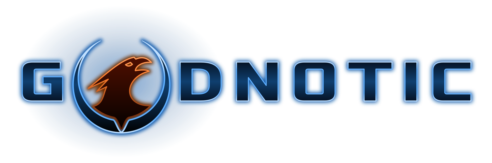

Starting…
Download Godnotic
Every map, texture, sound and the music: —, once. It stays in this browser for the next visit.
Downloading…
Something went wrong
Turn your device sideways to play.

Starting…
Download Godnotic
Every map, texture, sound and the music: —, once. It stays in this browser for the next visit.
Downloading…
Something went wrong
Downloading the map…